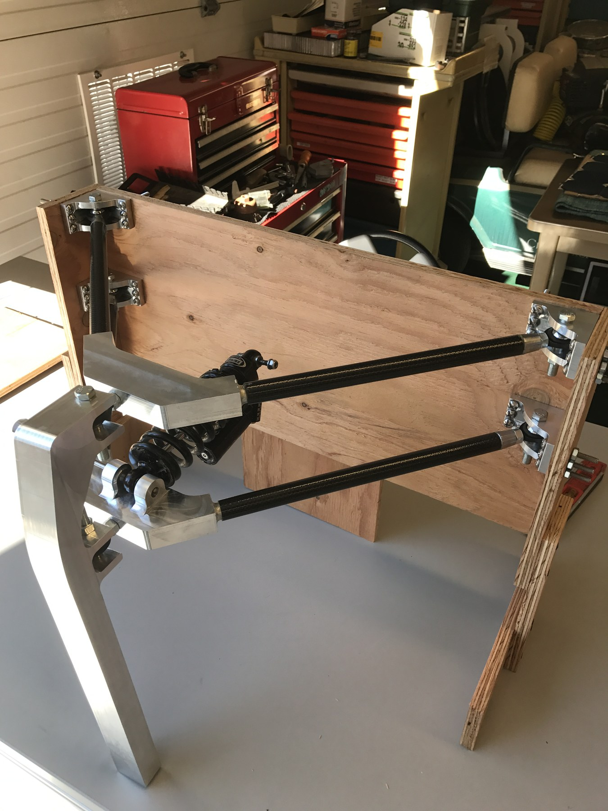

Machined Aluminum Rear Bike Rack
Bikepacking rack design for rough gravel: requirements, material and process tradeoffs, frame-specific packaging, M5 mount checks, bolted 6061 prototype hardware, and planned load/ride validation.
Learn morePortfolio
Case studies and build notes selected to show design process, manufacturing judgment, validation thinking, and hands-on problem solving.
Bikepacking rack design for rough gravel: requirements, material and process tradeoffs, frame-specific packaging, M5 mount checks, bolted 6061 prototype hardware, and planned load/ride validation.
Learn more
A Bluetooth-controlled RC car with a Delrin chassis, ATmega-based control system, steering servo, encoder, IMU, and flip-aware driving behavior.
Learn more
Front suspension for a lightweight solar car: Lotus Shark kinematics, 6061-T6 machined parts, carbon fiber tube wishbones, shock packaging, epoxy bond validation, and assembly verification.
Learn more